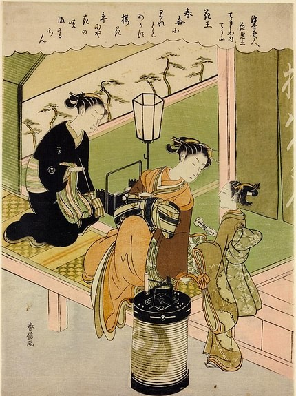
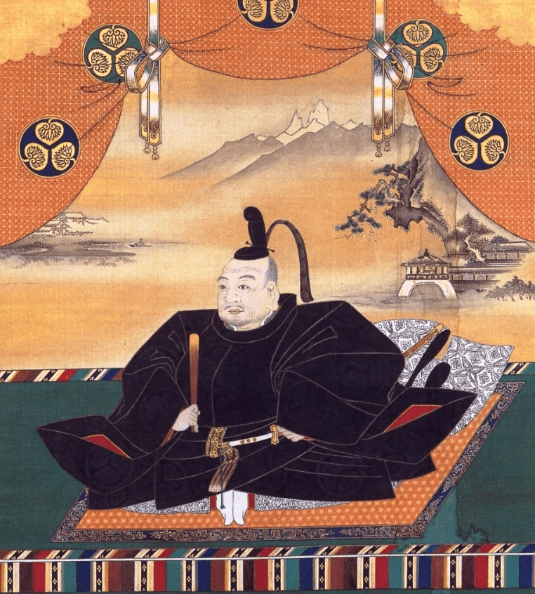

Cambios políticos y económicos
El periodo inicia con el establecimiento del shogunato Tokugawa, que trasladó la capital a Edo, conocida actualmente como
Tokio. Se impuso un sistema feudal basado en el aislamiento, la jerarquía social y el control político. Esta fue una época
de paz, estabilidad, crecimiento económico y poblacional, aunque tambien de censura y descontento social, en esta epoca se
desarrolló la cultura popular, el arte ukido, la literatura y el teatro kabuki.

El gran poder militar
Durante este tiempo, el país estuvo gobernado por la familia Tokugawa, que estableció un sistema feudal basado en el
shogunato, es decir, el poder militar supremo. El primer shōgun Tokugawa fue Tokugawa Leyasu, que unificó a los señores
feudales o daimyō s bajo su autoridad. El último shōgun Tokugawa fue Tokugawa Yoshinobu, este renunció a su cargo tras
la guerra boshin, que enfrentó a los partidarios del shogunato con los del emperador Meiji.
